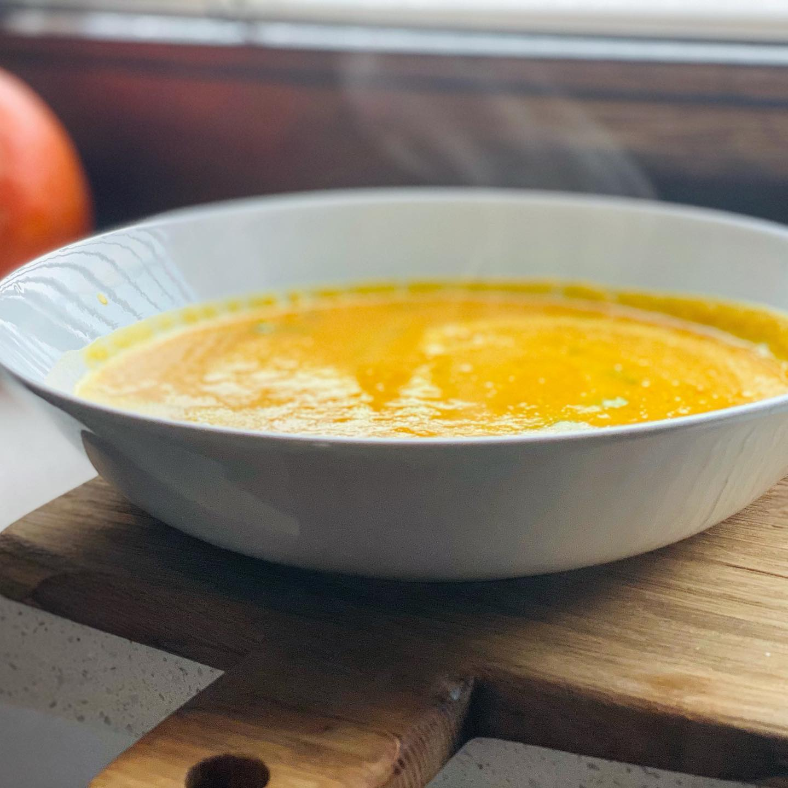

Zimná polievka podľa @cojediazdravedeti — Normy Jedál
Zimná naša polievočka: červená šošovica, kmin, Hokaidó a cesnak orestované na hroznovom oleji, KURKUMA od @powerlogy_slovakia , vegeta od @davidkovo.koreni podlejeme, varíme do mäkka a na záver pridáme vňate 👨🍳👈🏻👈🏻 #cojediazdravedeti #zimnapolievka #tekvica #vsadesamazelenina